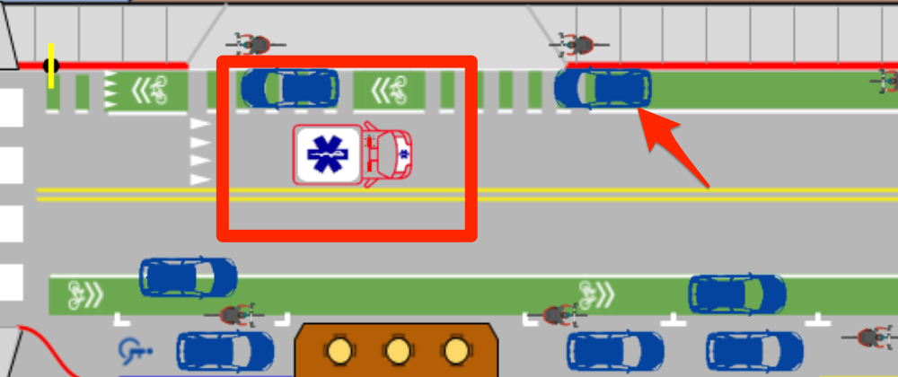

Emergency Vehicles Go Down the Middle with Bike Lanes
Cars and bikes pull over into the bike lanes to allow for first responders to pass
without conflict. Curbside delivery keeps the big trucks out of the roadway.
The ambulance can use both lanes for the fastest through this previously congested corridor.
